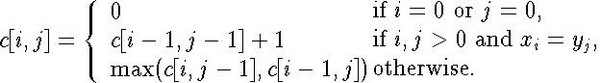

Theorem 16.1
If X = <x1, ...,xm> and If Y = <y1, ...,yn> are sequences and let Z = <z1, ...,zk> be some LCS of X and Y.
If xm = yn then zk = xmand Zk-1 is an LCS of Xm-1 and Yn-1
If xm ≠ yn then zk ≠ xm => Z is an LCS of Xm-1 and Y
If xm ≠ yn then zk ≠ yn => Z is an LCS of X and Y n-1
Proof
- f zk ≠ xm then we could add xm = yn to Z to get an LCS of length k + 1. By contradiction it must be that zk = xm = yn . |zk-1 | = k - 1 and is an LCS of Xm-1 and Yn-1 . It is an LCS, if not then W CS of Xm-1 and Yn-1 with | W | > k - 1 and so by appending xm = yn we get a CS of X and Y of length greater than k, a contradiction.
- If zk ≠ xm then z is a CS of Xm-1 and Y. If W a CS with | W | > k, then W would be a CS of X and Y, a contradiction
- Proof by reversing x and y
Equation

|